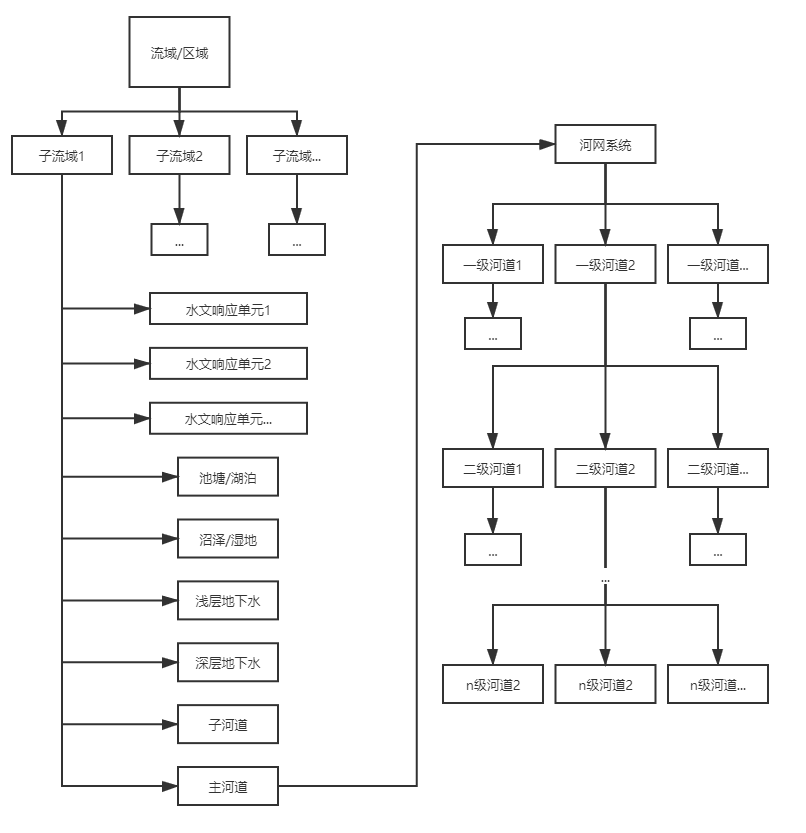
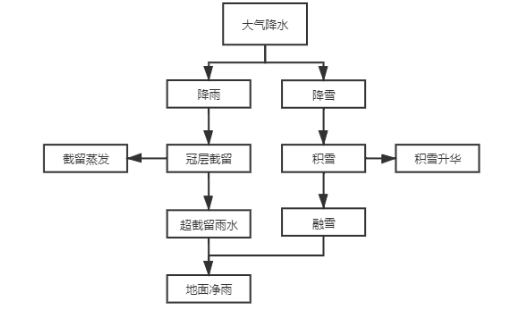

SWAT模型¶
SWAT是一种分布式水文模型。
从以下几个方面入手：
模型简介
模型基本原理
待补充
模型简介¶
应用方向：
评价人类活动对流域的水循环、泥沙、农业污染物质迁移的长期影响和作用
特点：
属于物理-概念结合的模型，育有很强的物理基础，能够考虑天气、土壤性质、地形、植被、人类土地管理的综合作用
适合于长时间尺度的水文循环和物质循环研究
适合宏观尺度的模拟
能模拟水循环过程，能以水循环为载体研究水土流失、营养物质输移、农药、病原菌等物质循环过程
能够灵活处理资料缺失问题。具有强大的模型数据库，除地形和土地利用等少量基本数据资料外，很多参数，如作物相关参数、土壤参数等可直接选用备用数据
分布式计算，先将流域分为子流域，子流域内继续细分水文响应单元，单独研究每个水文响应单元的内部循环，并在子流域进行累计汇总，再通过河网对子流域进行有机连接以模拟地表汇流，计算效率很高
模型基本原理¶
SWAT流域模拟结构
- 
模拟结构的概念性
全流域/区域->子流域->水文响应单元，松散耦合
物理模型：网格、地形单元等，强耦合
模拟方法的概念性
降雨/灌溉入渗：SCS、Green-Ampt
土壤水模拟：概念性的分层下渗模型，田间持水度
地下水：均衡模式，不考虑侧向径流
地表水：河槽蓄量法、马斯京根法
物理模型：Richard方程、运动波/动力波方程、地下水动力学方程
物理性：
水循环各过程刻画比较全面和贴合实际，几乎所有的实际物理水文模型均有模型计算过程对应
水文响应单元
代表了流域的下垫面
是集合体的概念
土地利用（林地、草地、麦田）+土壤类型（红壤土、灰潮土）+管理方式（雨养、灌2水、灌3水）
单个水文响应单元用一维模拟土壤水和作物过程
水文响应单元相互独立，无空间联系，不发生水分交换
两阶段的水文过程模拟
第一阶段
陆面过程，控制每个子流域水、泥沙、营养物、微生物等的内部循环转化过程，并产出到主河道
第二阶段
河道演进过程，模拟水、泥沙、营养物等通过河道演进知道流域出口
SWAT水循环模拟路径
- 